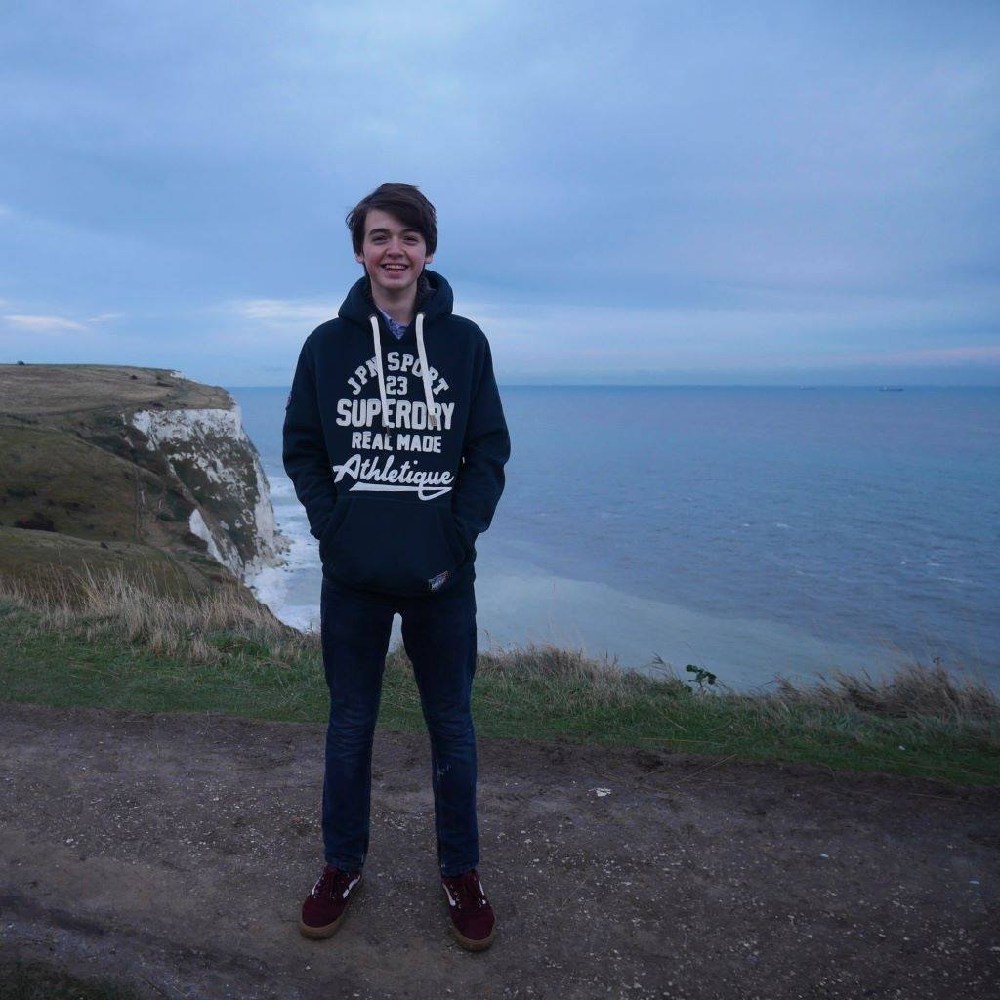

Samy Bekkaoui
Een beetje over mezelf
Dus ik ben Samy, ik ben 17 jaar oud, 1m87 en woon in Tienen. Ik ben op 30 November 2001 geboren in Brussel in het Sint-Woluwe ziekenhuis.
Mijn hobby's zijn basketball, videogames en informatica en ik ben ook goed in koken maar dat is niet echt een van mijn hobby's. Ik heb ook al bij jeugdherbergen en bij Delhaize gewerkt...
Mijn favoriete eten zijn macaroni en M&M's. Ik hou van Nike en haat Addidas. Studeren en vroeg opstaan zijn de 2 dingens die ik het meest haat.
Mijn favoriete schoenen zijn Jordan 1's